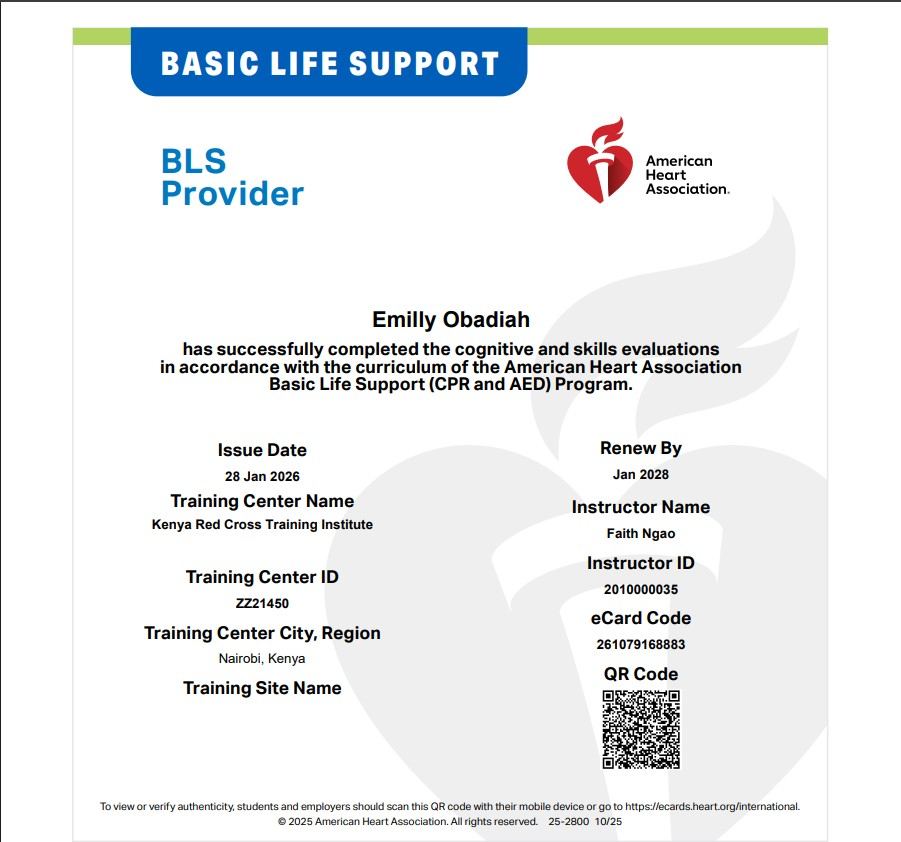
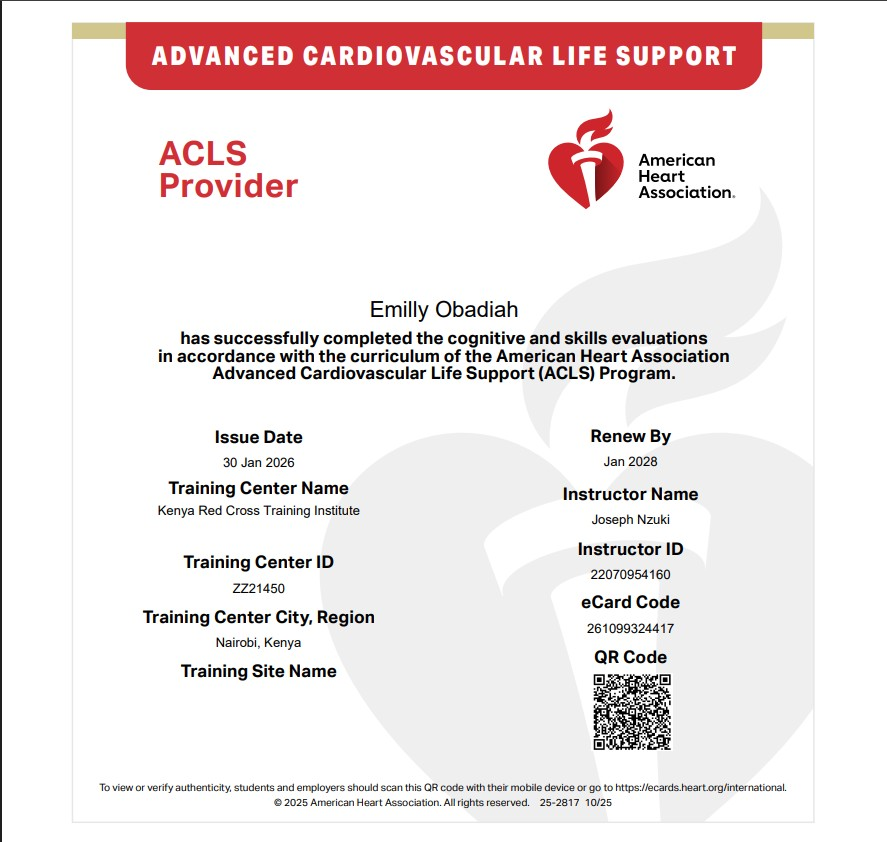
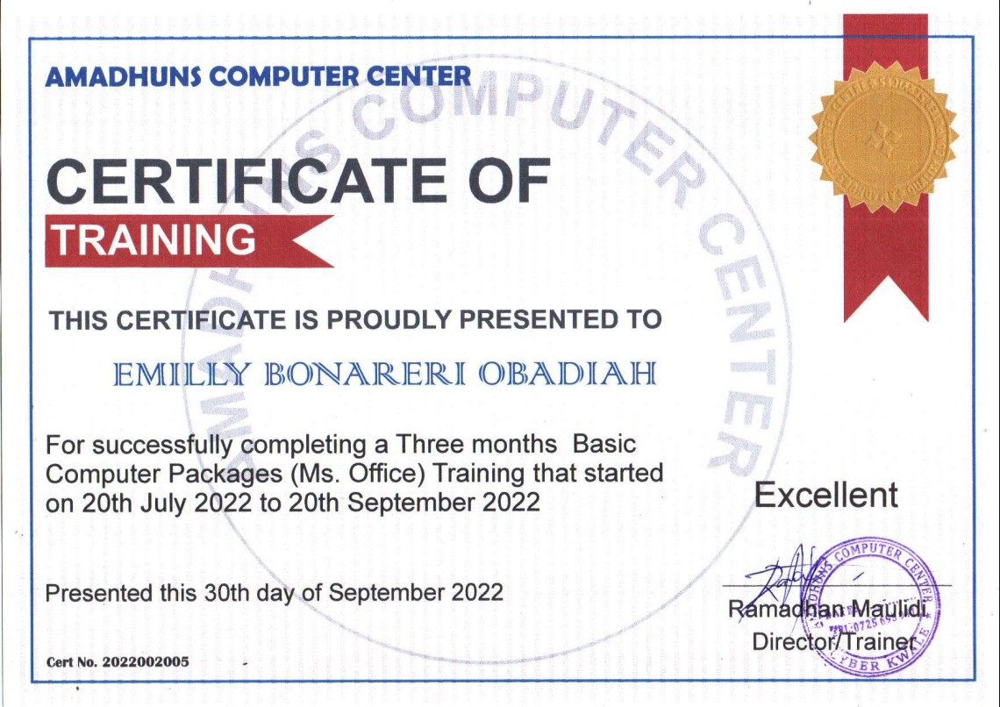

Certifications & Professional Development

BLS
Certified by Kenya Red Cross Training Institute

ACLS
Certified by Kenya Red Cross Training Institute

Computer Proficiency
Advanced Computer Packages

KRCHN Diploma
KMTC Homabay

Nursing License
Registered by Nursing Council of Kenya